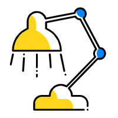
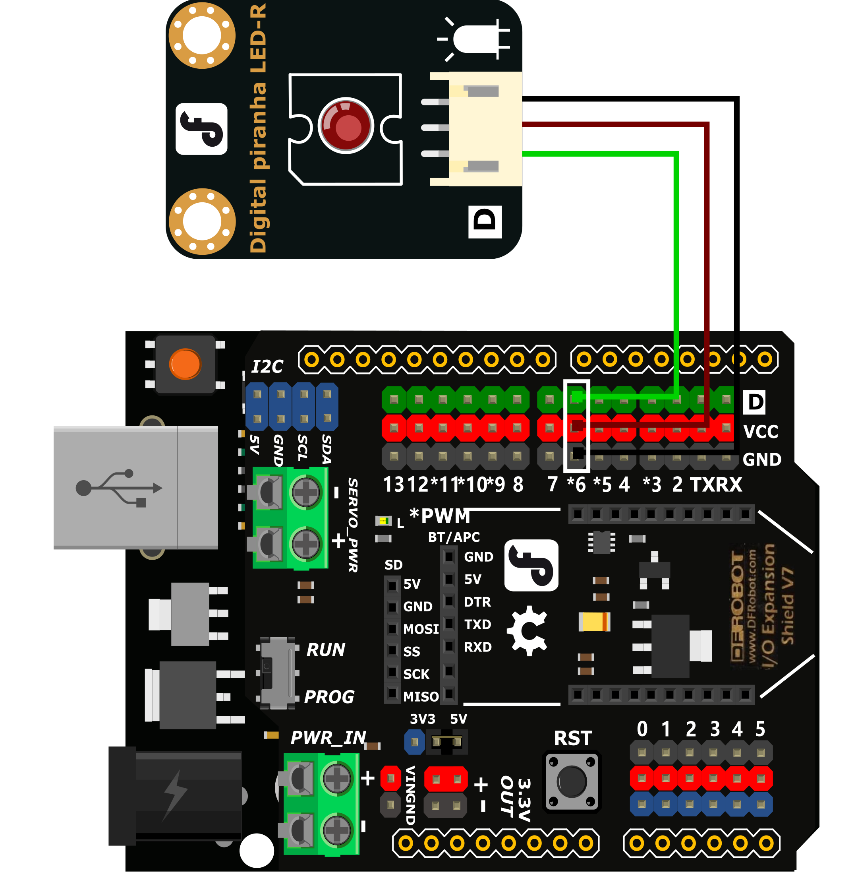
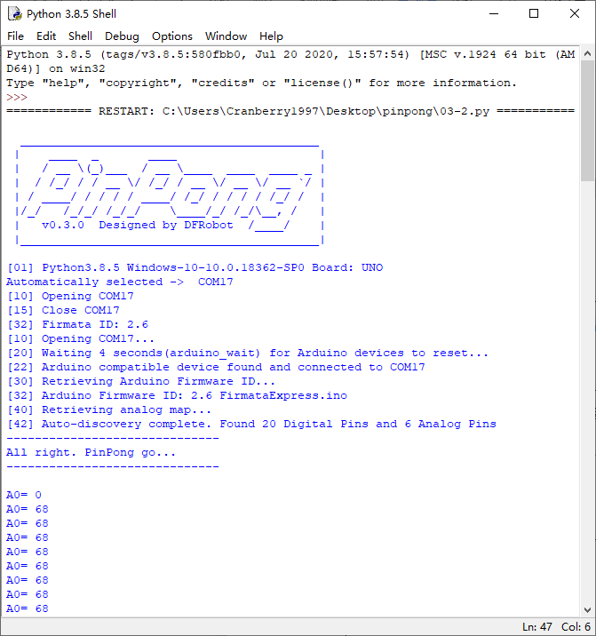
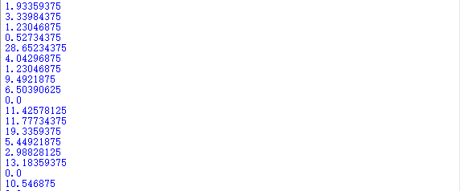

项目3 调光台灯
一、概述
在前面的课程中我们学会了如何点亮并控制LED灯，那LED灯的亮度我们可以调节吗？如果输出的值不是数字量，而是模拟量，是不是就可以实现通过数值来精确控制灯光亮度了。
在上节课的设计中，我们使用的是按钮控制灯的亮灭，按钮只有两个状态，是没办法输出模拟值的，所以本项目我们就需要使用到旋钮来作为灯光亮度的输入。
二、项目实施
（1）渐变灯光
硬件准备：
主控：Arduino UNO、IO 传感器扩展板 V7.1
模块：LED发光模块
连接线：TypeAtoB方口USB连接线
将LED发光模块接入6号数字引脚
程序编写：
打开pingpong库的官方文档，找到基础库示例中的“模拟输出”，并用IDLE打开。
摁下F5运行程序，查看效果。LED灯会逐渐变亮，当到最亮时熄灭再慢慢变亮，循环变化。
（2）旋钮调光
在上步完成的功能中,我们旋钮来精确的控制LED灯的亮度。
硬件准备：
主控：Arduino UNO、IO 传感器扩展板 V7.1
模块：LED发光模块、旋钮模块
连接线：TypeAtoB方口USB连接线

将LED发光模块接入6号数字引脚，将旋钮模块接入A0模拟引脚
程序编写：
import time
from pinpong.board import Board,Pin
Board("uno").begin() #初始化，选择板型(uno、leonardo、xugu)和端口号，不输入端口号则进行自动识别
pwm0 = Pin(Pin.D6, Pin.PWM) #初始化引脚为PWM模式 模拟输出方法2
adc0 = Pin(Pin.A0, Pin.ANALOG) #引脚初始化为电平输出
while True:
v = adc0.read_analog() #读取A0口模拟信号数值
L = int(v*255/1024)
pwm0.write_analog(L) #PWM输出
print("A0=",L)
运行代码，旋转旋钮LED灯会慢慢亮起和熄灭。
三、代码分析
导入必要的包和初始化设置。
import time
from pinpong.board import Board,Pin
Board("uno").begin() #初始化，选择板型和端口号，不输入则留空进行自动识别
pwm0 = Pin(Pin.D6, Pin.PWM)
adc0 = Pin(Pin.A0, Pin.ANALOG) #将Pin传入ADC中实现模拟输入
我们需要将旋钮输出的模拟值转换为LED灯亮度的PWM值，为了得到整数这里用了整型功能int。
v = adc0.read_analog() #读取A0口模拟信号数值
L = int(v*255/1024)
接着让LED灯根据我们转换过的数值亮起。
pwm0.write_analog(L) #PWM输出
print("A0=",L)
数据类型-整数类型
在我们做运算的时候，传感器读取到的数值经过*180/1024运算的结果往往不会是一个整数，常常会带着长长的小数尾数。我们试着不加int整形得到的结果如下：
这样的数值我们是无法直接使用的，所以就需要使用到整形int将数据取整。